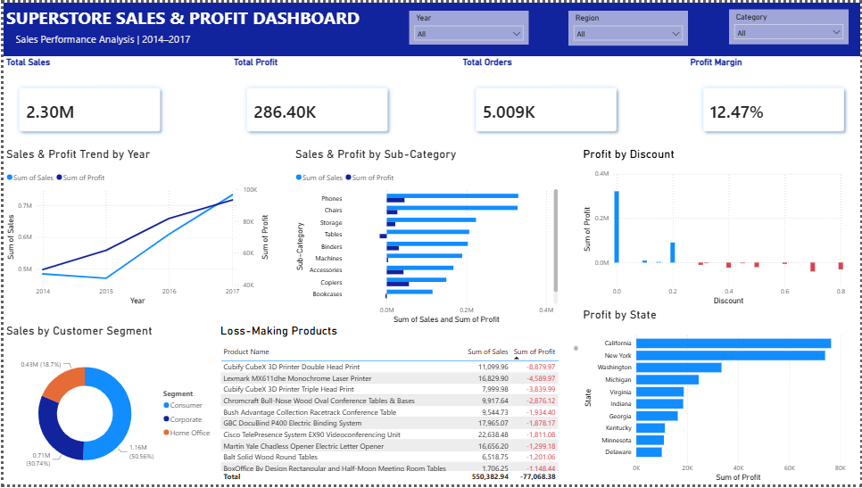

SQL • Power BI • Sales Analytics
Superstore Sales & Profit Analysis
Analyzed sales data to evaluate performance and profitability across products, customer segments, regions, and discount levels. Built an interactive Power BI dashboard to surface trends and loss-making areas.
Key insight: Some products generated strong sales but negative profit, while higher discount levels were associated with weaker profitability.
Recommendation: Review discount strategies and investigate loss-making products to improve overall profit margins.